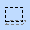

Selection and Resizing¶
Selection¶

Manipulating selection in a cel
To select an area of the canvas, choose the selection tool  and left-click and drag on the area you wish to select. You can copy (CTRL-C) or cut (CTRL-X) the selection to the clipboard. You can also drag the selected area around to move it.
The entire canvas may be selected with (CTRL-A).
Paste¶
If you paste (CTRL-V) an image from the clipboard into the view, it will appear in the top left of the current cel, in a rubber band selection rectangle. You can position it as you desire. Double-clicking on the selection will commit it. If the image is a 24-bit image from another application, SCICompanion will attempt to map the colors to the current palette (more control over this can be obtained by using View->Import image sequence, or by using CTRL-B instead of CTRL-V).
Transparent Paste¶
Transparent pasting (CTRL-SHIFT-V) will paste an image, but not include the pixels that are transparent. Note that alpha transparency is not preserved in standard Windows clipboard formats, so this will only work if the source image is another view cel inside SCICompanion.
Resizing¶

Resizing a cel
There are resize handles surrounding the bottom right edges of the canvas. You can drag them with the mouse to resize the image. Using different key combinations while dragging will affect how the image is resized.
Keys function None anchor the image on the top left CTRL anchor the image on the bottom right SHIFT stretch or shrink the image